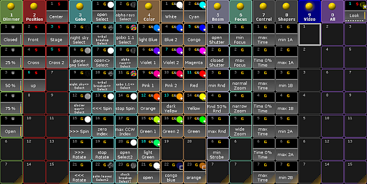

Preset Pools
All in all, there are 10 preset pools by default. Each of the pools stores values corresponding their preset type.
Open the preset pools
To open the single preset pools:
- Tap anywhere in the user-defined area.
- The pop-up Create Basic Window opens.
- Next, tap Presets.
- Then, tap single presets to open the corresponding pools.
Pop-up create basic window – presets
There are two pools that are not numerated:
-and-
- All:
Contrary to the numerated preset pools, it is possible to store all values without a preset type filter in the preset pool All.
To close the pop-up Create Basic Window, tap  in the upper right corner of the window.
in the upper right corner of the window.
All Preset Pools at a Glance
Here is an outline of all preset pools.

Preset pools